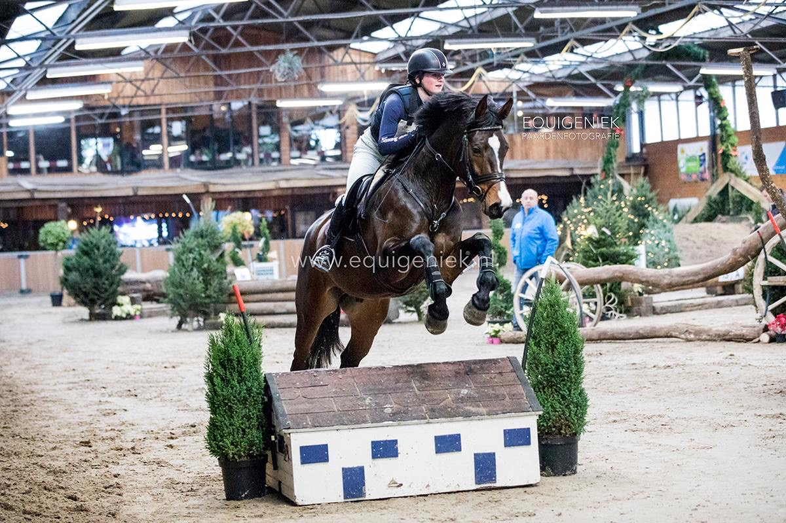

Kleur
Blauw is de basis, goud is voor de hoofdactie en voor accenten. Gebruik nooit andere kleuren.
--navy #163B50Titels, donkere vlakken, knoppen
--navy-deep #0F2C3DHero, footer, programma
--primary #426C87Merkkleur, iconen
--primary-dark #1F506CLinks, hover van knoppen
--accent #EAB200Hoofdknop, uitgelichte dag
--accent-50 #FDF6DEZachte accenten
--blue-50 #F1F5F8Lichte vlakken, weetjes
--grey-200 #E1E6ECRanden
--grey #5B6670Introteksten onder titels
--text #3A434FLopende tekst
Letter
Montserrat voor titels, knoppen en labels. Verdana voor lopende tekst. Titels zijn altijd vet en strak, nooit cursief en nooit in hoofdletters.
--h1, 900, alleen homepageDé Indoor SGW
--h1-page, 900Trainingen
--h2, 800, overal gelijkDrie dagen in de hal
22 tot 28 px, 800Dressuur en springen
--lead 17 px, grijsEen indruk van de vorige edities. Paarden en pony's, van BB tot en met Z.
Verdana 16 px, regel 1.7Het begon in 1999 met een groep eventingruiters die hun paarden ook in de winter fit wilden houden.
Montserrat 13 px, 70029 en 30 december
Knoppen
Altijd een pil. De tekst zegt precies wat er gebeurt, zonder pijltje of uitroepteken. Maximaal één gouden knop per blok.
Op een lichte achtergrond
Op een foto of donker vlak
Ronde knop voor sliders
Koppen van secties
Elke sectie begint met dezelfde kop. Titel links, korte intro rechts. Of titel met intro eronder en knoppen rechts.
.head
Een echte cross, maar dan binnen
Kom je rijden of wil je eerst trainen? Hier begin je.
.slider__head of .sponsors__head
Kaarten en blokken
Ronde hoeken: 12 px klein, 20 px gewoon, 32 px groot. Geen lijnen dwars door inhoud en geen zigzag.
Fotokaart .feature

29 en 30 decemberDe wedstrijd
Een complete SGW in de hal. Dressuur, springen en cross.
Crossdag
Uitgelichte dagkaart met .day--key.
- Cross BB tot en met Z
- Dierenarts Voor en na de cross
Kaart .card en weetje .fact
Gewone kaart
Voor overzichten op subpagina's, zoals trainingsgroepen of nieuws.
Locatie
Manege Het Zwarte Water in De Mortel. Plan je route
Actiebalk .becomesponsor
Ook sponsor worden?
Zet je bedrijf in de schijnwerpers bij de Indoor SGW.
Interactie
De site moet je kunnen aanklikken, uitklappen en verschuiven. Gebruik deze onderdelen in plaats van lange lappen tekst.
Tabs
Inhoud van de eerste tab. Wissel met klikken of met de pijltjestoetsen.
Inhoud van de tweede tab.
Tabs zitten altijd in dezelfde witte balk met rand en schaduw, op elke achtergrond. De gekozen tab is navy. Zo zie je meteen dat je kunt wisselen.
Afsluiter (.cta)
Foto links, titel, tekst en knoppen samen rechts. Op mobiel de foto boven. Geen titel los in een hoek, geen lege vlakken.


Klaar om te trainen?
Voorbeeldtekst van twee regels. Zeg kort wat er gebeurt als je op de knop klikt.
Accordeon
Kan ik mijn training annuleren?
Voorbeeldantwoord. Een vraag per regel, het antwoord klapt uit.
Waar kan mijn paard staan?
Voorbeeldantwoord.
Sliders en banden
Foto's in een sleepslider zonder bijschrift. Sponsoren altijd met logo in twee rijen die tegen elkaar in lopen.


Logoband


Grote pagina-onderdelen
Eén sterk interactief element per pagina. Ze staan in hoofdstuk 7 en 8 van de stylesheet, het script in indoorsgw.js.
Verhaal met jaartal
Het jaartal telt mee van 1999 naar nu terwijl de zinnen oplichten. Daaronder het bestuur met groepsfoto.
.tour en .fencesParcours-tour
Schermvullende foto's. Bij elke klik spring je over de hindernis, het logo rijdt mee over de lijn. Met finish.
.theaterBioscoop
Beeldvullend scherm met de video's in een balk eronder. YouTube laadt pas na klikken.
.desk en .formContact met tabs
Tabs per onderwerp. Links wie je vraag leest en wat goed is om te weten, rechts alleen de velden die erbij horen. contact.html#sponsoring opent meteen de goede tab.
.plannerVerblijfplanner
Kies aankomst, vertrek, paarden en wensen. De mail aan Het Zwarte Water staat meteen klaar.
.wallSponsorwand
Alle sponsoren met logo, met zoeken op naam. Boven de wand blijven de twee bewegende banden.
.viewerLijstenkijker
Pdf's en tekeningen direct op de site, zonder downloaden. Zoek op naam of paard: de lijsten met een treffer lichten op, de naam wordt goud gemarkeerd.
.signup en .stepsAanmelden in stappen
Drie stappen met keuzekaarten. Rechts loopt de aanmelding mee met de prijs. Elke stap wordt gecontroleerd voor je verder kunt, met een duidelijke melding bij het veld.
.picker en .statsKlassekiezer
Tabs per klasse met de cijfers groot. De belangrijkste waarde in goud.
.hub en .tileFototegels
Klik door naar een onderdeel. Pil linksboven met de stand van zaken.
.slots en .noticeWat komt eraan
Rustige rijen met datum en een pil "Volgt". Een notice voor één belangrijke opmerking.
Menu met submenu
Over ons en Wedstrijd klappen uit. Desktop: hover of klik. Mobiel: uitklappen in het menu. Pas de structuur aan in tools/nav.py en draai het script, dan is elke pagina gelijk.
Responsive
Hoe de site zich gedraagt van een kleine telefoon (320) tot een groot scherm (1440). Elke pagina wordt op deze breedtes gecontroleerd.
Uitlijning
- Midden: alleen de hero, en korte losse meldingen zoals een bevestiging, een lege zoekresultaat of de kaart in de Instagram-band. Hooguit drie regels.
- Links: al het andere. Sectiekoppen, lopende tekst, kaarten, lijsten, formulieren, afsluiters en de footer.
- Op mobiel blijft links ook links. Nooit lange tekst centreren, dat leest onrustig.
- Getallen en tijden in een rijtje (zoals bij de dagen) staan rechts.
Wat er verandert per scherm
- Vanaf 1080 breed (laptop): kolommen naast elkaar, sectiekop met de intro rechts.
- Onder 1080 (tablet): intro onder de titel, grote blokken onder elkaar, tegels in twee kolommen.
- Onder 640 (telefoon): alles in één kolom, knoppen over de volle breedte, foto boven de tekst.
- Tabs, banden en sliders schuiven binnen hun eigen vlak. De pagina zelf schuift nooit opzij.
Zo bouw je het
- Kolommen altijd met minmax(0,1fr), dan kan een lange naam de pagina niet breder maken.
- Lange mailadressen en links breken af. Knopteksten mogen op een telefoon naar twee regels.
- Tekst nooit breder dan ongeveer 45 tekens voor een intro en 65 voor lopende tekst.
- Alles wat je aanklikt is minstens 44 px hoog.
- Foto's met een vaste verhouding en object-fit: cover, zodat ze nooit vervormen.
- Controleer op 320, 375, 768, 1024 en 1440. Overal moet scrollWidth gelijk zijn aan de breedte.
Formulieren
Eén veld is altijd een .fld met label en invoer. Twee of drie keuzes worden kaarten, vier of meer een keuzelijst. Een fout staat onder het veld, in woorden.
Dit lijkt geen goed e-mailadres.
Twee keuzes: .options
Meer dan één kiezen mag: .picks (bijvoorbeeld dagen)
Akkoord: .consent
Stappen: .steps (alleen bij een echt stappenplan)
Het complete voorbeeld met meelopende aanmelding staat op Trainingen. Contact gebruikt dezelfde velden in .desk.
Wedstrijdblokken
Voor de pagina's onder Wedstrijd. Rustig, met één ding in goud.
Fototegels: .hub met .tile
 Bij de KNHS
Bij de KNHSVraagprogramma
Pil linksboven zegt hoe het ervoor staat.
 Volgt
VolgtStartlijsten
Eén gouden pil per rij.
Archief onlineUitslagen
De hele tegel is klikbaar.
Wat komt eraan: .slots en .notice
Dressuur en springen
Dinsdag 29 december
Cross
Woensdag 30 december
Let op: één belangrijke opmerking per sectie.
Grote cijfers: .stats (met .stats--2 voor twee kolommen) en .plate
Lijstenkijker: .viewer
Pdf's en tekeningen direct op de site met zoeken op naam. Zie Startlijsten en Uitslagen. Werkt alleen online, niet in een losse preview.
Lange tekst: .prose
Voor tekstpagina's zoals een privacyverklaring: koppen, alinea's en lijsten met de juiste ruimte en hooguit 68 tekens breed.
Regels
Uit de feedback op de homepage. Het volledige overzicht staat in CLAUDE.md in de projectmap.
Wel doen
- Strak, rustig en premium. Veel ruimte, weinig tegelijk.
- Vet Montserrat, ronde hoeken, alleen de huiskleuren.
- Alle sectietitels even groot, met dezelfde ruimte eronder.
- Interactie: slepen, tabs, uitklappen, klikken.
- Sponsoren altijd met logo in een bewegende band.
- Teksten in je-vorm, menselijk en in de taal van de sport.
- Logo als watermerk: licht en altijd helemaal in beeld.
- Ruimte uit het 8px-raster: --space tussen secties, --head-gap onder een kop, --gap tussen blokken.
- Blokken naast elkaar even hoog.
Niet doen
- Druk, speels of een poster-gevoel.
- Zigzag-layouts of lijnen dwars door de inhoud.
- Streepjes (– of —) of middenpuntjes als scheidingsteken in tekst.
- Bijschriften onder sliderfoto's.
- Feiten verzinnen. Twijfel je, vraag het na.
- Titels die tegen het menu aan lopen.
- Een kruimelpad, of een blok dat tegen een gekleurd vlak aan zit.
- Logo's of foto's die half afgesneden zijn.
Alle onderdelen
Alles wat in de stylesheet staat, per hoofdstuk, met de pagina's waar het gebruikt wordt. Dit overzicht maakt python3 tools/onderdelen.py. Draai dat na elke wijziging aan de stylesheet.
| Onderdeel | Delen en varianten | Gebruikt op |
|---|---|---|
| Basis | ||
.card | vraagprogramma | |
.pill | --glass --gold | 404, startlijsten, uitslagen, virtual-tour, vraagprogramma, wedstrijd |
| Layout en koppen | ||
.head | elke pagina | |
.program | __bg | homepage |
.prose | alleen in script of stijlgids | |
.section | --flush --tint | elke pagina |
.slider | __bar __ctrl __head | homepage |
.sponsors | __head | homepage, sponsoren |
| Knoppen en links | ||
.actions | elke pagina | |
.arrow | --back | 404, hindernissen, homepage, virtual-tour, wedstrijd |
.btn | --glass --gold --navy --sm --white | elke pagina |
.link | homepage | |
.round | --glass | hindernissen, homepage |
| Navigatie | ||
.brand | elke pagina | |
.logo-dark | elke pagina | |
.logo-light | elke pagina | |
.menu | __toggle | elke pagina |
.menu-btn | elke pagina | |
.nav | __bar | elke pagina |
.sheet | __logo __top | elke pagina |
.sub | elke pagina | |
| Hero en paginakop | ||
.count | homepage | |
.hero | __bg __content __intro __lead __video | homepage |
.info | homepage | |
.infobar | homepage | |
.page-hero | __bg | 404, contact, crossparcours, over-ons, sponsoren, stalling, startlijsten, trainingen, uitslagen, vraagprogramma, wedstrijd |
.play | homepage | |
.status | homepage | |
.theater | __bar __barin __stage | virtual-tour |
.tour | __ctrl __finish __now __panel __shot __shots __top | hindernissen |
| Kaarten en blokken | ||
.about | __img | homepage |
.answer | contact, trainingen | |
.badge | homepage | |
.becomesponsor | homepage | |
.bg | hindernissen, homepage, over-ons, sponsoren, stalling, trainingen, vraagprogramma, wedstrijd | |
.cards | vraagprogramma | |
.check | stalling | |
.checks | stalling | |
.chip | stalling | |
.chips | stalling | |
.consent | trainingen | |
.cta | hindernissen, homepage, over-ons, sponsoren, stalling, trainingen, vraagprogramma, wedstrijd | |
.date | homepage, trainingen, wedstrijd | |
.day | --key | homepage, trainingen, wedstrijd |
.days | homepage, trainingen, wedstrijd | |
.desk | __info __main __stal __to | contact |
.doc | __hits | crossparcours, startlijsten, uitslagen |
.duo | homepage | |
.fact | --key --white | contact, homepage, stalling |
.facts | contact, homepage, stalling | |
.feature | __foot | homepage |
.field | stalling | |
.fld | __error __hint __label | trainingen |
.form | __done __foot __grid | contact, trainingen |
.hub | 404, wedstrijd | |
.input | contact, trainingen | |
.map | __load | contact, homepage, stalling |
.mark | --about --card --cta --desk --program | contact, hindernissen, homepage, over-ons, sponsoren, stalling, trainingen, vraagprogramma, wedstrijd |
.notice | crossparcours, startlijsten | |
.option | trainingen | |
.options | trainingen | |
.people | over-ons | |
.person | --lead | over-ons |
.pick | contact | |
.picker | crossparcours, vraagprogramma | |
.picks | contact | |
.planner | __form __sum | stalling |
.plate | vraagprogramma | |
.practical | contact, homepage, stalling | |
.quick | homepage | |
.search | sponsoren, startlijsten, uitslagen | |
.signup | __body __card __done __foot __kicker __list __main __name __note __price __step __title | trainingen |
.slot | __date | startlijsten, uitslagen |
.slots | --2 | startlijsten, uitslagen |
.sponsor | __logo __name | sponsoren |
.stat | --key | crossparcours, vraagprogramma |
.stats | __note --2 | crossparcours, vraagprogramma |
.stepper | stalling | |
.steps | __item | trainingen |
.story | __lines __year | over-ons |
.sum | __big __mail __note | stalling |
.tabs | --form | contact, crossparcours, uitslagen, vraagprogramma |
.team | __img | over-ons |
.ticks | contact | |
.tile | 404, wedstrijd | |
.tool | crossparcours, startlijsten, uitslagen | |
.viewer | __bar __count __group __list __msg __pages __side __stage __tools | crossparcours, startlijsten, uitslagen |
.wall | __count __empty __tools | sponsoren |
.when | homepage | |
| Sliders, banden en media | ||
.clip | __img __txt | virtual-tour |
.course | __done __rider | hindernissen |
.fence | hindernissen | |
.fences | hindernissen | |
.finish | hindernissen | |
.insta | __avatar __band __card | homepage |
.irow | --rev | homepage |
.logo | --name | homepage, sponsoren |
.marquee | --rev | homepage, sponsoren |
.reel | virtual-tour | |
.screen | __note __now __over __play __poster __yt | virtual-tour |
.slide | homepage | |
.track | homepage, sponsoren | |
| Interactie | ||
.accordion | contact, trainingen | |
.modal | __box __close | alleen in script of stijlgids |
| Footer en mobiele balk | ||
.footer | __bottom __intro __logo __top | elke pagina |
.mbar | elke pagina | |
.socials | elke pagina | |
.wordmark | elke pagina | |
| Fase van de site en watermerk | ||
.demo | homepage | |